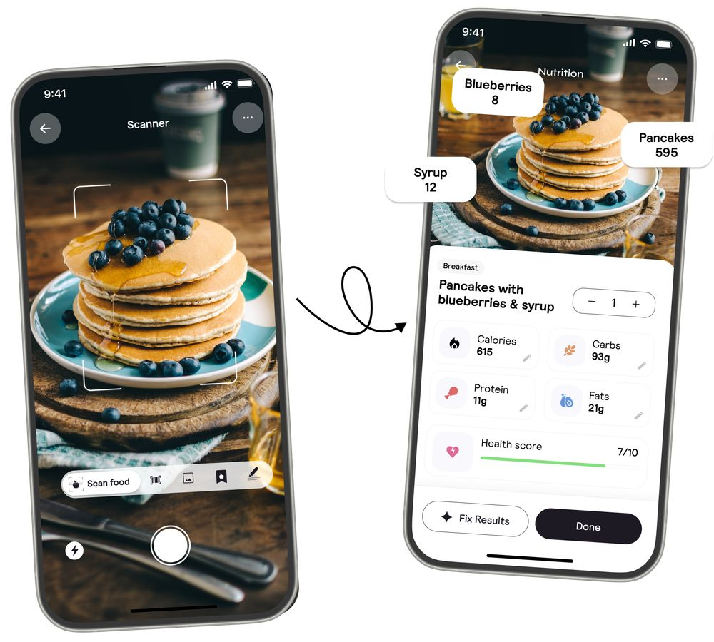

בגיל 17 בלבד, זאק ידגארי הפך לאחד היזמים המבטיחים ביותר בתחום הבריאות והתזונה עם אפליקציה בשם Cal AI, שמכניסה 1.12 מיליון דולר בחו
פורסם במקור ב LinkedIn
בגיל 17 בלבד, זאק ידגארי הפך לאחד היזמים המבטיחים ביותר בתחום הבריאות והתזונה עם אפליקציה בשם Cal AI, שמכניסה 1.12 מיליון דולר בחודש!! 💸💸💸
האפליקציה, שהושקה במאי 2024, מאפשרת למשתמשים לצלם את הארוחה שלהם ולקבל באופן מיידי הערכה של קלוריות ומידע תזונתי, הודות לטכנולוגיית בינה מלאכותית מתקדמת. התוצאה? חוויית שימוש פשוטה ומהירה שמצליחה להתעלות על מתחרים כמו MyFitnessPal. 📸
אז איך הצליח זאק להגיע להצלחה כזו בגיל צעיר? הנה כמה נקודות מרכזיות:
👉 אסטרטגיית שיווק גאונית
במקום להסתמך על פרסום יקר, זאק בנה מערכת יחסים עם מיקרו-משפיענים ב-TikTok. בעזרת סרטונים קצרים, האפליקציה זכתה לחשיפה ויראלית והורדות של יותר ממיליון משתמשים תוך חצי שנה בלבד.
👉 תמחור נגיש
מודל עסקי חכם: רק $10 לחודש או $30 לשנה, עם תקופת ניסיון חינמית. המחיר הנמוך פותח את הדלת לקהל רחב.
👉 חזון לעתיד
זאק מתכנן להרחיב את Cal AI ולשלב יכולות מתקדמות נוספות, כמו דיוק גבוה יותר בניתוח תזונתי. הוא גם שואף להקים פלטפורמת שיווק משפיענים שתעזור ליזמים אחרים לצמוח.
💡 תובנה אישית
"הדבר הכי חשוב הוא להאמין בעצמך, גם כשהסביבה לא מבינה אותך. היכולת להסתגל ולהיות יצירתי היא הכלי החזק ביותר שיש לך."
זאק הוא הוכחה חיה לכך שחדשנות וגיל אינם מגבלה. עם רעיון טוב, ביצוע מדויק וקצת אומץ – השמיים הם הגבול. 🚀
Zach Yadegari
#יזמות #בינהמלאכותית #חדשנות #השראה
